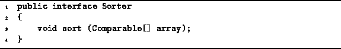

Data Structures and Algorithms
with Object-Oriented Design Patterns in Java
Data Structures and Algorithms
with Object-Oriented Design Patterns in JavaThe traditional way to implement a sorting algorithm is to write a method that sorts an array of data. This chapter presents an alternate, object-oriented approach that is based on the notion of an abstract sorter .
Think of a sorter as an abstract machine, the sole purpose of which is to sort arrays of data. A machine is an object. Therefore, it makes sense that we represent it as an instance of some class. The machine sorts data. Therefore, the class will have a method, say sort, which sorts an array of data.
Program  defines the Sorter interface.
The interface consists of the single method sort.
This method takes as its argument
an array of Comparable objects
and it sorts the objects therein.
defines the Sorter interface.
The interface consists of the single method sort.
This method takes as its argument
an array of Comparable objects
and it sorts the objects therein.

Program: Sorter interface.
 Copyright © 1998 by Bruno R. Preiss, P.Eng. All rights reserved.
Copyright © 1998 by Bruno R. Preiss, P.Eng. All rights reserved.